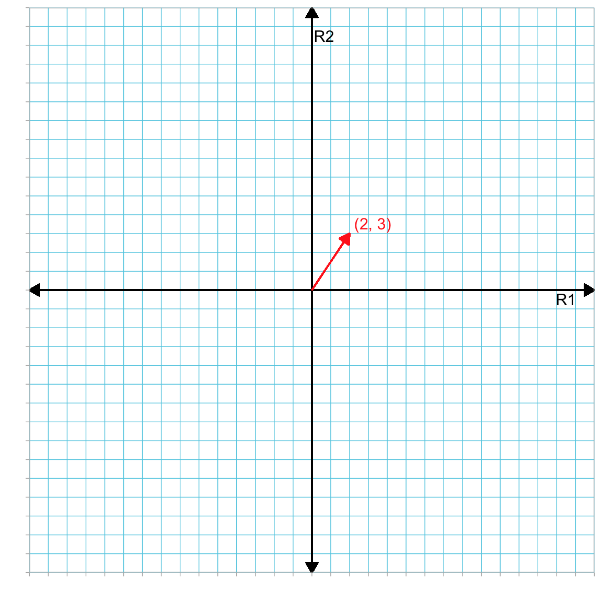
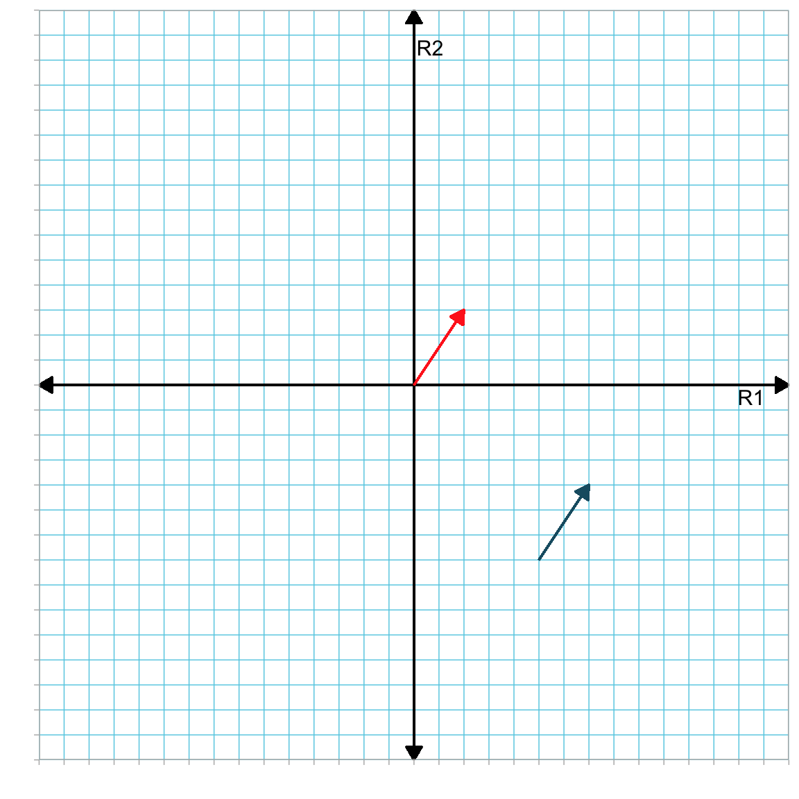
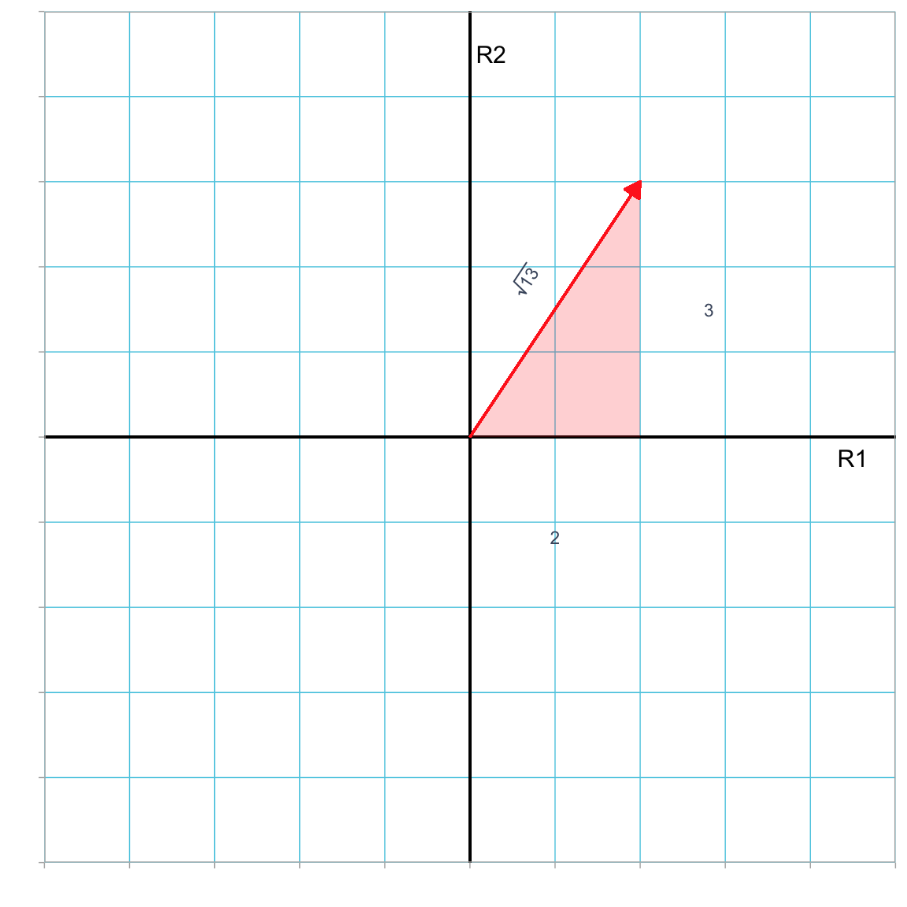
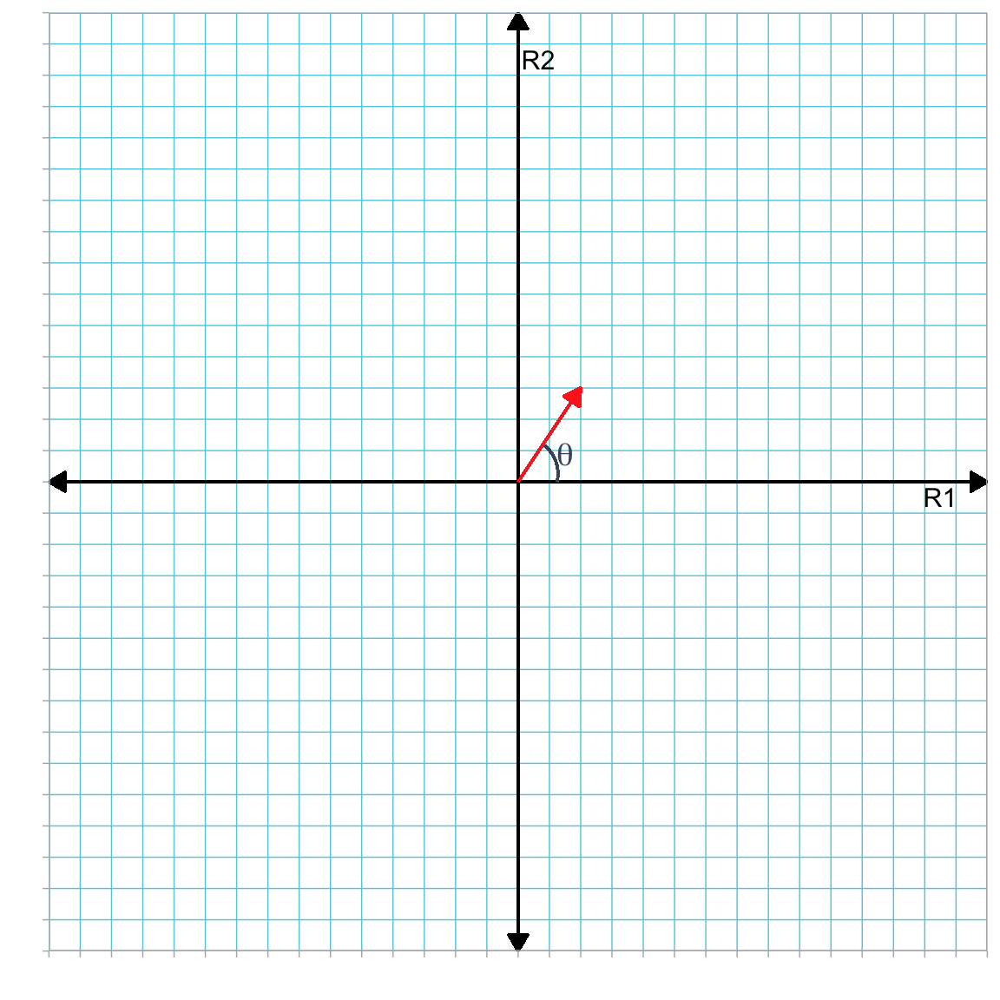
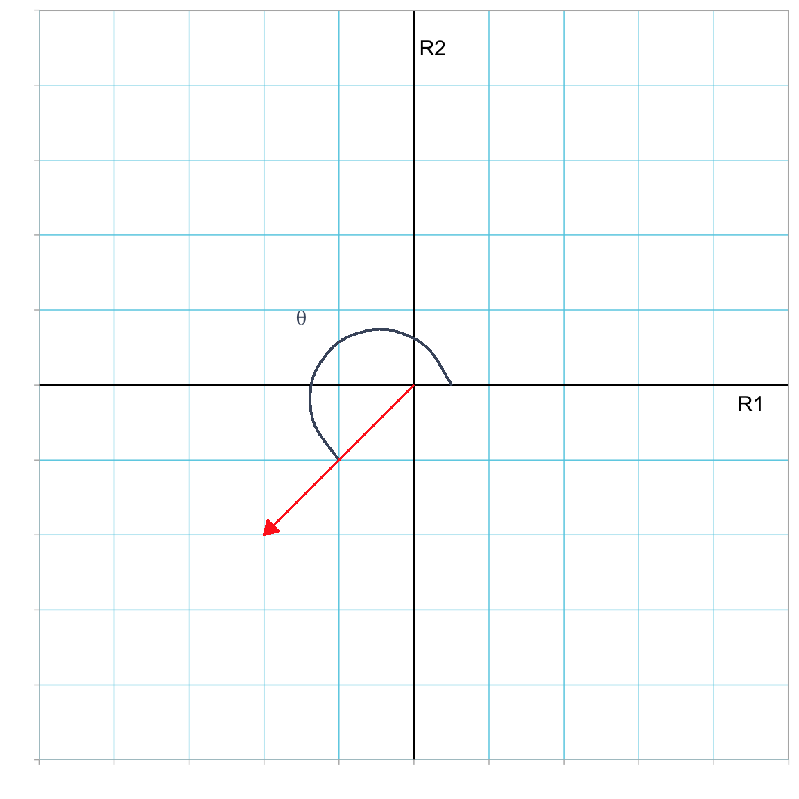
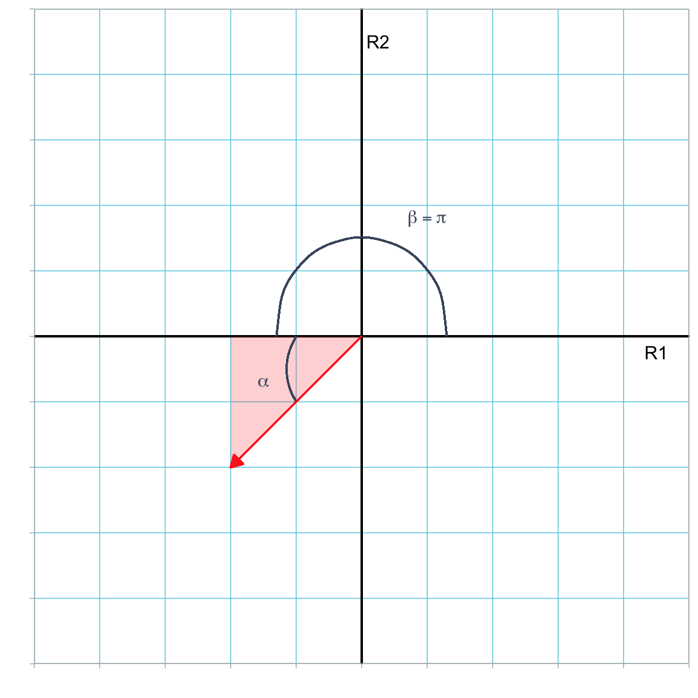
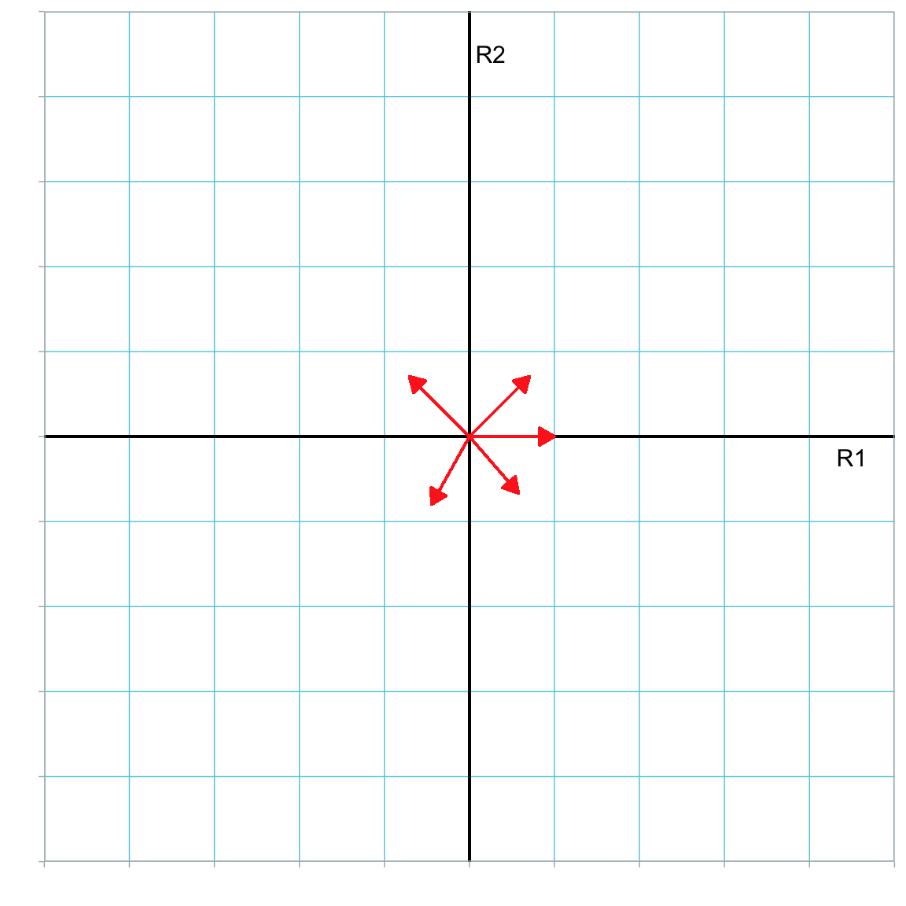
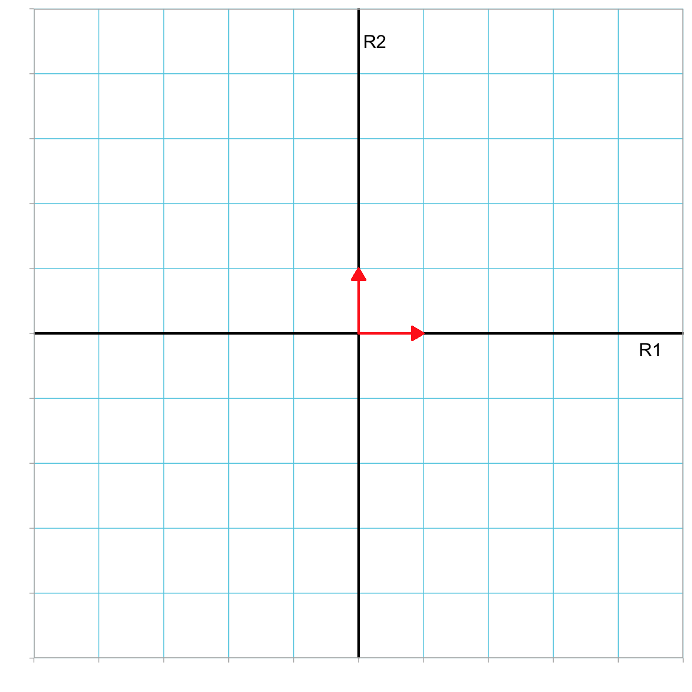

In this chapter you will learn more about the vector data structure. You will be introduced to some of the vocabulary that we use to describe vectors. You will also be introduced to the geometry of vectors. It is important to recognize that although the illustration of vector geometry is restricted to 2-dimensional space, all of these ideas can be extended to n-dimensions.
2.1 What is a Vector?
A vector is a specifically ordered one-dimensional array of values written as a row or column. Vectors are typically described by the number of elements they have. Here, for example, a is a four-element column vector:
We might also say that a is a column vector in 4-dimensions.
In statistical or psychometric applications, vectors are how we typically represent and structure data collected on a particular attribute. For example, a might represent test scores for \(n=4\) students. Each element in this vector would correspond to a student’s test score. In this case, \(a_1=5\) would be the test score for the first student recorded in the vector, \(a_2=4\) would be the test score for the second student recorded in the vector, etc.
Computationally, we can also work with vectors using R. We use the matrix() function to create a column or row vector in R. We include the elements of the vector in a c() function and provide this to the data= argument. We also include either the argument ncol=1 (column vector) or nrow=1 (row vector). Below we create vector a. We can also use the length() function to count the number of elements in a vector.
One important vector operation is transposition. Transposition is an operation in which we replace the ith element of a column vector as the ith element of a row vector, and vice-versa. In other words, we are converting a column vector into a row vector, or, conversely, converting a row vector into a column vector. Notationally, we use a superscripted prime or a superscripted intercalate symbol (looks like a “T”) to denote a vector’s transpose. For example, transposing vector a, which we defined earlier:
In R, the t() function will compute the transpose of a vector. Here we use t() to compute the transpose of the earlier defined vectors a and b.
# Transpose of at(a)
[,1] [,2] [,3] [,4]
[1,] 5 4 7 2
# Transpose of bt(b)
[,1]
[1,] 1
[2,] 0
[3,] 0
NOTATION
Throughout the remainder of the book, row vectors will be denoted using a transpose. So, for example, a will indicate a column vector, and \(\mathbf{a}^{\intercal}\) will indicate a row vector.
2.2 General Form of a Vector
Now that we have introduced transposition, we can formalize the general notation for both column and row vectors. The general form of a column vector with n elements is:
Vectors can also be thought of as a special case of a matrix in one of the dimensions is equal to 1. For example x could be considered a \(n \times 1\) matrix, and \(\mathbf{x}^{\intercal}\) could be considered a \(1 \times n\) matrix.
2.3 The Geometry of Vectors
A vector can be represented geometrically by using a coordinate system where each element in the vector corresponds to a distance along one of the reference axes defining the coordinate system. Consider the column vector a:
This vector has a distance of 2 on the first reference axis (R1) and a distance of 3 on the second reference axis (R2).
Figure 2.1: Plot showing vector a (in red) in the R1–R2 dimensional space.

In Figure 2.1 the reference coordinate system (R1–R2) define a two-dimensional space. Vector a had two elements and thus resides in a two-dimensional space. In general, an n-dimensional vector resides in an n-dimensional space.
The reference axes always intersect at the origin of the space (i.e., the reference point \((0, 0)\)). Here the reference axes are at right angles to one another, although this is not a requirement. When the reference axes are at right angles to each other, the reference system is referred to as an orthogonal coordinate system.
2.4 Vector Properties
Geometrically, a vector is displayed as a line segment with an arrowhead at one end of the segment. The end of the vector with the arrowhead is called the head or terminus, and the other end of the vector is called the tail or origin. The head of the vector indicates the direction of the vector.
All vectors have a direction. They also have a length. These two properties completely define a vector within a given reference system. Note that location of the vector in the reference system is not a property of the vector. For example, the red vector and the blue vector below are identical—they have the same direction and length!
Figure 2.2: Plot showing two identical vectors (in red and blue) in the R1–R2 dimensional space. They are identical because they have the same length and direction. Location in the reference system is a convenience, not a property of the vector.

PROTIP
Location is a convenience in that we can re-locate any vector within the reference system to make it easier to work with.
2.4.1 Vector Length
The length of a vector (also referred to as the vector’s magnitude or norm) is the distance from the vector’s tip to tail. In an orthogonal reference system, if we locate the tail of the vector at the origin, multiple right triangles with the vector as hypotenuse can be formed with the reference axes. The Pythagorean Theorem can then be applied to determine the length of a vector.
Figure 2.3: Plot showing vector a (in red) in the R1–R2 dimensional space. This vector is the hypotenuse of a right triangle with legs of length 2 and 3.

In Figure 2.3, vector a is the hypotenuse of a right triangle with legs of length 2 and 3. We can use the Pythagorean Theorem to find the length of the vector:
Note that the sum of the squared elements is equal to the square of the length of the vector, and to determine the length of a (denoted as \(\lvert\lvert \mathbf{a} \rvert\rvert\)), we take the square root of that sum. For our two-dimensional vector, this is
We can generalize this to finding the length of a vector a with n-dimensions:
\[
\lvert\lvert \mathbf{a} \rvert\rvert = \sqrt{a_1^2 + a_2^2 + a_3^2 + \ldots + a_n^2}
\] Computationally, to compute the length of a vector, we chain together several computations that (1) square the elements of in the vector, (2) sum those squares together, and (3) compute the square root of this sum. Below we create a 2-element column vector a and compute its length.
# Create vector aa =matrix(data =c(2, 3), ncol =1)a
[,1]
[1,] 2
[2,] 3
# Compute length of vector asqrt(sum(a ^2))
[1] 3.605551
2.4.2 Vector Direction
A vector’s direction is often expressed as the measure of the angle between the horizontal reference axis and the vector.1Figure 2.4 shows this angle (denoted \(\theta\)) for vector a.
Figure 2.4: Plot showing vector a (in red) in the R1–R2 dimensional space. The direction of this vector is the measure of the angle (\(\theta\)) between the horizontal reference axis and the vector.

To determine this angle, we need to use a trigonometric function. For example, here we can use the fact that the cosine of an angle \(\theta\) is defined as the length of the side of the right triangle which is adjacent to \(\theta\) divided by the length of the hypotenuse of the triangle.2
To find \(\theta\), we need to calculate the arc-cosine of \(\frac{2}{\sqrt{13}}\). We can compute the arc-cosine in R using the acos() function. This function will compute the value of \(\theta\) in radians. We can also convert this to degrees by multiplying by \(\frac{180}{\pi}\) (where \(\pi\) is the mathematical constant approximated as 3.14).
# Find theta using arccosine (radians)acos(2/sqrt(13))
[1] 0.9827937
# Find theta using arccosine (degrees)acos(2/sqrt(13)) *180/ pi
[1] 56.30993
We always measure the angle counter-clockwise to the reference axis. So if we measure the direction associated with the vector \(\begin{bmatrix}-2 \\ -2\end{bmatrix}\), the direction is more than \(\pi\) radians (or \(180^\circ\)).
Figure 2.5: Plot showing vector (-2, -2) (in red) in the R1–R2 dimensional space. The direction of this vector is the measure of the angle (\(\theta\)) between the vector and the horizontal reference axis measured in the counter-clockwise direction from the axis.

There are several ways to compute this angle. Remember that when we use the trigonometric functions, we are computing the angle in the right triangle formed by the vector and the reference axes (see Figure 2.6).
Figure 2.6: Plot showing vector (-2, -2) (in red) in the R1–R2 dimensional space. The direction of this vector is the measure of the angle (\(\theta\)) between the vector and the horizontal reference axis measured in the counter-clockwise direction from the axis. Here we have split this angle up into two parts; \(\alpha\) can be computed using a trigonometric function, and \(\beta = \pi\) radians.

To find \(\theta\) we need to find \(\alpha\) using trigonometric functions and then add it to \(\beta\). For example,
Computing the arc-tangent with the atan() function we find that \(\alpha=0.785\) radians. Adding this to the \(\beta\) value which is \(\pi\) radians, we get the vector’s direction of 3.927 radians (or \(225^\circ\)).
# Compute alpha (in radians)atan(1)
[1] 0.7853982
# Compute theta = alpha + beta (in radians)atan(1) + pi
[1] 3.926991
# Compute theta = alpha + beta (in degrees)(atan(1) + pi) *180/ pi
[1] 225
Beyond two dimensions, direction in more complicated, involving more than one angle. For example, reporting the direction of a vector in three dimensions requires two angles. One common method is to give (1) the angle between the first reference axis (e.g., x-axis) and the projection of the vector onto the plane defined by the first and second reference axes (e.g., the xy-plane), and (2) the angle between the vector and the third reference axis (e.g., the z-axis). Suffice it to say that we need additional angles to fully define the direction of a vector in higher dimensions.
2.5 Vector Equality
Two vectors are said to be equal if they satisfy two conditions:
Both vectors have the same dimensions (i.e., they have the same number of elements and both are row or column vectors);
Corresponding elements from each vector must be equal.
\(\mathbf{a} \neq \mathbf{b}\), since not all of the corresponding elements are equal.
\(\mathbf{a} \neq \mathbf{c}^{\intercal}\), since a’s dimensions are \(4 \times 1\) (column vector) and \(\mathbf{c}^{\intercal}\)’s dimensions are \(1 \times 4\) (row vector).
\(\mathbf{a} = \mathbf{c}\) since both vectors a and c have the same dimensions (\(4 \times 1\)) and all corresponding elements are equal.
Geometrically, two vectors are equal if they have the same length and direction. (Remember, location in the reference coordinate system is not a property of the vectors, so two equal vectors might be in different locations.)
2.6 Special Vectors
There are several vectors that are special in that they have unique properties.
2.6.1 Zero Vector
One special vector is the zero vector. A zero vector (denoted 0) is a vector in which every element is 0. For example, the following vector is a zero vector:
The length of a zero vector is 0. (Convince yourself of this!) Furthermore, since geometrically the head and tail of a zero vector coincide (are at the same location in the reference coordinate system) they have an undefinable direction.
2.6.2 Ones Vector
Another special vector is referred to as a ones vector. A ones vector is a vector in which every elements is 1. For example, the following vector 1 is a ones vector:
The length of a ones vector is \(\sqrt{n}\). (Convince yourself of this!) The direction of a ones vector is \(45^\circ\) or 0.785 radians since the each element in the vector is equal. For example, locating the tail of a 2-dimensional ones vector at the origin, it would lie on the \(R1=R2\) line. Figure 2.7 shows a 2-dimensional ones vector with its tail located at the origin.
Figure 2.7: Plot showing the ones vector (in red) in the R1–R2 dimensional space. The \(R1=R2\) line is also displayed.
Although the length of a unit vector must be 1, the direction is not specified. Thus there are an infinite number of unit vectors. Figure 2.8 shows several unit vectors with their tail located at the origin.
Figure 2.8: Plot showing several unit vectors in the R1–R2 dimensional space. All vector tails have been located at the origin.

2.6.4 Elementary Vectors
An elementary vector is a vector that has one element that is equal to one and the remainder of its elements equal to 0. For example, each of the 3-element column vectors below are elementary vectors.
For an n-dimensional vector there are always n elementary vectors. Moreover, every elementary vector is also a unit vector. Geometrically, each elementary vector lies on one of the reference axes. Figure 2.9 shows the two elementary vectors (with their tail located at the origin) in our 2-dimensional reference coordinate system.
Figure 2.9: Plot showing the two elementary vectors in the R1–R2 dimensional space. All vector tails have been located at the origin.

Exercises
Create a 2-dimensional orthogonal reference system. Add the following vectors to that system.
While it is common to express the direction as the measure of the angle between the horizontal reference axis, it could also be expressed as the measure of the angle between the vector and any of the reference axes. In more than two-dimensions, the direction would need to include multiple angles to specify the direction; you would need \(n-1\) angles to specify an n-dimensional vector.↩︎
You could also use the definition for sine or tangent to compute \(\theta\).↩︎